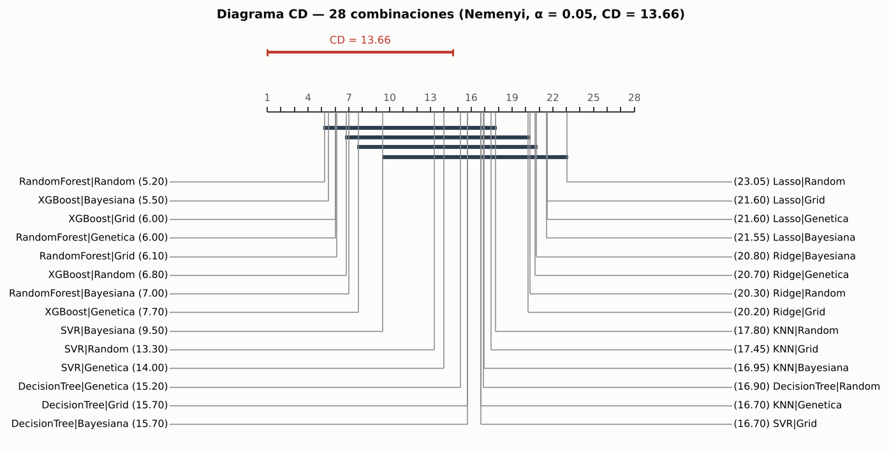
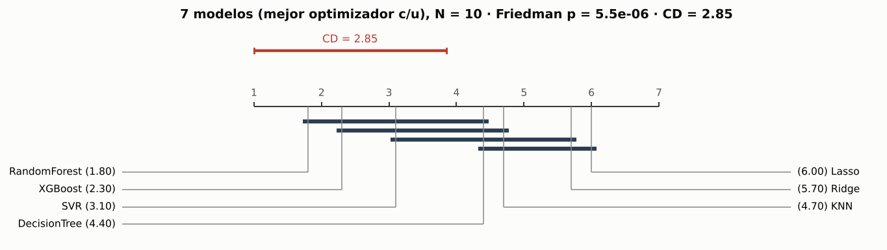
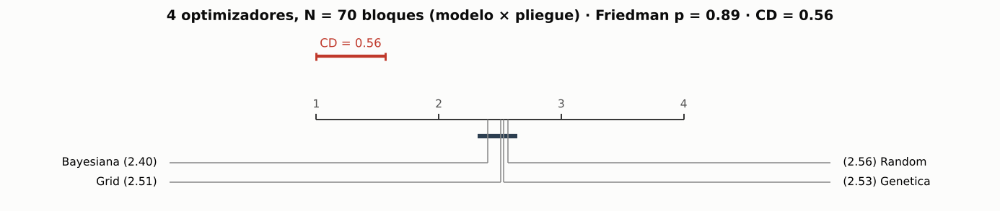
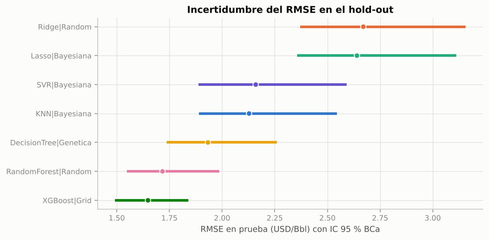

3.4. Comparación estadística#
Con 28 combinaciones hay 378 pares posibles; probarlos uno a uno con α = 0.05 produciría ~19 falsos positivos esperados. Por eso se sigue la secuencia jerárquica de la guía:
Ómnibus (Friedman) sobre los 10 pliegues externos → ¿hay alguna diferencia?
Post-hoc de Nemenyi + diagrama de Diferencia Crítica → qué grupos son equivalentes.
Para regresión, sobre las predicciones del hold-out: MCS → Giacomini-White / Clark-West entre finalistas → Diebold-Mariano (HLN) mejor vs segundo + bootstrap estacionario.
SPA de Hansen para controlar data snooping frente al modelo base del entregable 1.
Corrección Holm / Benjamini-Hochberg y tamaños de efecto (δ de Cliff, d de Cohen).
IC bootstrap BCa para las métricas principales.
import sys, warnings, json
sys.path.insert(0, "..")
warnings.filterwarnings("ignore")
import numpy as np
import pandas as pd
import matplotlib.pyplot as plt
from src import config as C
from src.data import load_model_data, split_dev_test, xyg, make_preprocessor
from src.models import MODEL_ORDER
from src.nested_cv import collect, regression_metrics
from src.stats_tests import (friedman, nemenyi, cd_diagram, model_confidence_set, giacomini_white, clark_west,
diebold_mariano, bootstrap_mean_ci, spa_test, holm, benjamini_hochberg,
cliffs_delta, cohens_d_paired)
from src.evaluation import bca_ci, rmse, mae, r2
from src.viz import set_style, MODEL_COLORS, SERIES
C.set_global_seed()
set_style()
pd.set_option("display.float_format", lambda v: f"{v:,.4f}")
df = load_model_data()
dev, test = split_dev_test(df)
Xt, yt, _ = xyg(test)
res = collect()
fm = pd.read_csv(C.RESULTS_DIR / "fold_rmse_A_estructural.csv", index_col=0)
mt = pd.read_csv(C.RESULTS_DIR / "master_table.csv")
mtA = mt[mt.scenario == "A_estructural"]
print(f"Matriz de pérdidas por pliegue: {fm.shape[0]} pliegues × {fm.shape[1]} combinaciones")
Matriz de pérdidas por pliegue: 10 pliegues × 28 combinaciones
3.4.1 Etapa 1: test de Friedman (28 combinaciones)#
fr = friedman(fm)
pd.DataFrame([{"χ²_F": fr["chi2"], "g.l.": fr["df"], "p-valor": fr["p_value"], "F de Iman-Davenport": fr["iman_davenport_F"],
"p-valor (F)": fr["p_value_F"], "W de Kendall": fr["kendall_W"], "N (pliegues)": fr["N"], "k": fr["k"]}])
| χ²_F | g.l. | p-valor | F de Iman-Davenport | p-valor (F) | W de Kendall | N (pliegues) | k | |
|---|---|---|---|---|---|---|---|---|
| 0 | 145.3525 | 27 | 0.0000 | 10.4950 | 0.0000 | 0.5383 | 10 | 28 |
Interpretación. Se rechaza con claridad la hipótesis de que las 28 combinaciones rinden igual (χ²_F = 145.4 con 27 g.l., p < 10⁻¹⁵; F de Iman-Davenport = 10.5). La W de Kendall = 0.54 indica una concordancia moderada-alta entre pliegues: los rankings de los modelos son bastante consistentes de un pliegue a otro. Se justifica pasar al análisis post-hoc.
3.4.2 Etapa 2: Nemenyi y diagrama de Diferencia Crítica#
cd, P = nemenyi(fr["avg_ranks"], fr["N"])
ax = cd_diagram(fr["avg_ranks"], cd, title=f"Diagrama CD — 28 combinaciones (Nemenyi, α = 0.05, CD = {cd:.2f})")
plt.tight_layout()
plt.savefig(C.FIG_DIR / "cd_28.png", dpi=150, bbox_inches="tight")
fr["avg_ranks"].rename("rango medio").to_frame().head(10)

| rango medio | |
|---|---|
| RandomForest|Random | 5.2000 |
| XGBoost|Bayesiana | 5.5000 |
| XGBoost|Grid | 6.0000 |
| RandomForest|Genetica | 6.0000 |
| RandomForest|Grid | 6.1000 |
| XGBoost|Random | 6.8000 |
| RandomForest|Bayesiana | 7.0000 |
| XGBoost|Genetica | 7.7000 |
| SVR|Bayesiana | 9.5000 |
| SVR|Random | 13.3000 |
# Nivel de modelo: mejor optimizador de cada modelo (7 tratamientos) y nivel de optimizador (4 tratamientos)
best = mtA.loc[mtA.groupby("model")["outer_rmse_mean"].idxmin()].set_index("model")
cols7 = [f"{m}|{best.loc[m, 'method']}" for m in MODEL_ORDER]
fm7 = fm[cols7].copy()
fm7.columns = MODEL_ORDER
fr7 = friedman(fm7)
cd7, P7 = nemenyi(fr7["avg_ranks"], fr7["N"])
# optimizadores: bloques = modelo × pliegue (70 bloques)
long = fm.stack().rename("rmse").reset_index()
long.columns = ["fold", "combo", "rmse"]
long[["model", "method"]] = long["combo"].str.split("|", expand=True)
fm4 = long.pivot_table(index=["model", "fold"], columns="method", values="rmse")[["Grid", "Random", "Bayesiana", "Genetica"]]
fr4 = friedman(fm4)
cd4, P4 = nemenyi(fr4["avg_ranks"], fr4["N"])
cd_diagram(fr7["avg_ranks"], cd7, title=f"7 modelos (mejor optimizador c/u), N = 10 · Friedman p = {fr7['p_value']:.2g} · CD = {cd7:.2f}")
plt.tight_layout()
plt.savefig(C.FIG_DIR / "cd_models.png", dpi=150, bbox_inches="tight")
cd_diagram(fr4["avg_ranks"], cd4, title=f"4 optimizadores, N = 70 bloques (modelo × pliegue) · Friedman p = {fr4['p_value']:.2g} · CD = {cd4:.2f}")
plt.tight_layout()
plt.savefig(C.FIG_DIR / "cd_methods.png", dpi=150, bbox_inches="tight")
display(pd.DataFrame([{"nivel": "7 modelos", "χ²": fr7["chi2"], "p": fr7["p_value"], "W de Kendall": fr7["kendall_W"], "CD": cd7},
{"nivel": "4 optimizadores", "χ²": fr4["chi2"], "p": fr4["p_value"], "W de Kendall": fr4["kendall_W"], "CD": cd4}]))
ranks_out = {"combos": fr["avg_ranks"].to_dict(), "cd_combos": cd, "models": fr7["avg_ranks"].to_dict(), "cd_models": cd7,
"methods": fr4["avg_ranks"].to_dict(), "cd_methods": cd4,
"friedman": {k: {kk: (float(vv) if not isinstance(vv, pd.Series) else None) for kk, vv in v.items() if kk != "avg_ranks"}
for k, v in {"combos": fr, "models": fr7, "methods": fr4}.items()}}
json.dump(ranks_out, open(C.RESULTS_DIR / "friedman_nemenyi.json", "w"), indent=1)
P7.round(4)
| nivel | χ² | p | W de Kendall | CD | |
|---|---|---|---|---|---|
| 0 | 7 modelos | 34.4571 | 0.0000 | 0.5743 | 2.8483 |
| 1 | 4 optimizadores | 0.6382 | 0.8876 | 0.0030 | 0.5606 |


| RandomForest | XGBoost | SVR | DecisionTree | KNN | Ridge | Lasso | |
|---|---|---|---|---|---|---|---|
| RandomForest | 1.0000 | 0.9986 | 0.8303 | 0.1004 | 0.0428 | 0.0011 | 0.0003 |
| XGBoost | 0.9986 | 1.0000 | 0.9821 | 0.3098 | 0.1649 | 0.0079 | 0.0025 |
| SVR | 0.8303 | 0.9821 | 1.0000 | 0.8303 | 0.6455 | 0.1004 | 0.0428 |
| DecisionTree | 0.1004 | 0.3098 | 0.8303 | 1.0000 | 0.9999 | 0.8303 | 0.6455 |
| KNN | 0.0428 | 0.1649 | 0.6455 | 0.9999 | 1.0000 | 0.9460 | 0.8303 |
| Ridge | 0.0011 | 0.0079 | 0.1004 | 0.8303 | 0.9460 | 1.0000 | 0.9999 |
| Lasso | 0.0003 | 0.0025 | 0.0428 | 0.6455 | 0.8303 | 0.9999 | 1.0000 |
Interpretación.
28 combinaciones. Con k = 28 y solo N = 10 pliegues la diferencia crítica es enorme (CD = 13.7 rangos): Nemenyi es conservador cuando hay muchos tratamientos y pocos bloques. Solo se separan los extremos: las combinaciones de Random Forest y XGBoost (rangos 5.2–7.7) son significativamente mejores que las de Ridge y Lasso (rangos 20.2–23.1). Todo lo intermedio forma grupos solapados.
7 modelos (mejor optimizador de cada uno). Friedman p = 5.5 × 10⁻⁶, W = 0.57, CD = 2.85. Random Forest (1.8) y XGBoost (2.3) superan significativamente a Ridge y Lasso (p Nemenyi ≤ 0.008), y Random Forest también a KNN (p = 0.043). Random Forest, XGBoost y SVR no se distinguen entre sí (p ≥ 0.83).
4 optimizadores (70 bloques modelo × pliegue). Friedman p = 0.89 y W = 0.003: no hay evidencia de que el optimizador cambie el desempeño externo. Los rangos medios son casi idénticos (Bayesiana 2.40, Grid 2.51, Genética 2.53, Random 2.56) y caben dentro de la CD = 0.56.
Esto matiza el capítulo 2: la Bayesiana encuentra mejores óptimos internos con el mismo presupuesto, pero con 30 evaluaciones todos los métodos llegan a una región suficientemente buena y la diferencia queda por debajo del ruido de la partición. La decisión que más importa es la familia de modelo.
3.4.3 Regresión: Model Confidence Set sobre el hold-out#
Pérdida = error cuadrático de cada uno de los 28 modelos finales sobre los 749 registros de prueba (ordenados por activo y año). MCS con estadístico T_max, bootstrap estacionario (bloque medio ≈ n^{1/3}) y α = 0.10. Se incluyen también las líneas base para verificar que el procedimiento las expulsa.
from sklearn.dummy import DummyRegressor
from sklearn.svm import SVR
from sklearn.pipeline import Pipeline
Xd, yd, _ = xyg(dev)
base_pred = {
"Dummy|—": Pipeline([("prep", make_preprocessor()), ("m", DummyRegressor())]).fit(Xd, yd).predict(Xt),
"SVR lineal (E1)|—": Pipeline([("prep", make_preprocessor()), ("m", SVR(kernel="linear"))]).fit(Xd, yd).predict(Xt),
}
preds = {f"{r['model']}|{r['method']}": r["pred"] for r in res if r["scenario"] == "A_estructural" and r["fold"] == "final"}
preds_all = {**preds, **base_pred}
losses = pd.DataFrame({k: (yt - v) ** 2 for k, v in preds_all.items()})
mcs = model_confidence_set(losses, alpha=0.10, B=2000)
mcs["RMSE prueba"] = np.sqrt(mcs["mean_loss"])
mcs.to_csv(C.RESULTS_DIR / "mcs.csv", index=False)
mcs[["model", "RMSE prueba", "p_mcs", "in_mcs", "elim_order"]].head(15)
| model | RMSE prueba | p_mcs | in_mcs | elim_order | |
|---|---|---|---|---|---|
| 0 | XGBoost|Random | 1.5958 | 1.0000 | True | 30 |
| 1 | XGBoost|Bayesiana | 1.6235 | 0.7755 | True | 29 |
| 2 | XGBoost|Grid | 1.6481 | 0.7755 | True | 28 |
| 3 | RandomForest|Bayesiana | 1.6544 | 0.7755 | True | 27 |
| 4 | RandomForest|Genetica | 1.6993 | 0.6725 | True | 26 |
| 5 | XGBoost|Genetica | 1.7097 | 0.6725 | True | 25 |
| 6 | RandomForest|Random | 1.7171 | 0.6725 | True | 24 |
| 7 | RandomForest|Grid | 1.7212 | 0.5060 | True | 23 |
| 8 | DecisionTree|Random | 1.9208 | 0.5060 | True | 22 |
| 9 | DecisionTree|Genetica | 1.9326 | 0.3880 | True | 21 |
| 10 | DecisionTree|Grid | 1.9611 | 0.2925 | True | 20 |
| 11 | DecisionTree|Bayesiana | 1.9874 | 0.1630 | True | 19 |
| 12 | KNN|Random | 2.0742 | 0.1150 | True | 17 |
| 13 | SVR|Grid | 2.0932 | 0.1540 | True | 18 |
| 14 | KNN|Bayesiana | 2.1281 | 0.0835 | False | 14 |
Interpretación. Con α = 0.10 el conjunto de confianza retiene 15 de los 30 modelos: las 8 combinaciones de XGBoost y Random Forest (p_MCS ≥ 0.51), los 4 árboles de decisión, KNN-Random y dos SVR. Quedan fuera todos los Ridge y Lasso, el SVR lineal del entregable 1 y el Dummy (p_MCS ≤ 0.005).
El MCS es amplio porque el hold-out tiene fuerte dependencia dentro de cada activo (cap. 4): el bootstrap estacionario por bloques reconoce que 749 filas equivalen a muchas menos observaciones independientes (139 activos), lo que ensancha la incertidumbre. Aun así, el mensaje es nítido: los modelos lineales son significativamente peores y los ensambles encabezan el conjunto de confianza (XGBoost-Random con p = 1).
3.4.4 Comparaciones dirigidas: Giacomini-White y Clark-West#
Giacomini-White (condicional, instrumentos 1 y d_{t−1}) entre los finalistas del MCS de familias distintas (modelos no anidados).
Clark-West para pares anidados: (i) escenario A ⊂ escenario B (B agrega
BrentDifferentialal mismo modelo); (ii) Dummy (solo intercepto) ⊂ Ridge.Los p-valores de todas las comparaciones dirigidas se ajustan por Holm y por Benjamini-Hochberg.
in_set = mcs[mcs.in_mcs]["model"].tolist()
fam_best = []
for k in in_set:
fam = k.split("|")[0]
if fam not in [f.split("|")[0] for f in fam_best]:
fam_best.append(k)
finalists = fam_best[:4] if len(fam_best) >= 2 else mcs["model"].head(3).tolist()
print("Finalistas (mejor de cada familia dentro del MCS):", finalists)
rows = []
for i in range(len(finalists)):
for j in range(i + 1, len(finalists)):
a, b = finalists[i], finalists[j]
gw = giacomini_white(yt - preds_all[a], yt - preds_all[b], conditional=True)
rows.append({"prueba": "Giacomini-White (condicional)", "modelo A": a, "modelo B": b,
"estadístico": gw["gw"], "p crudo": gw["p_value"],
"dif. media pérdida (A−B)": gw["mean_loss_diff"]})
# Clark-West (i): mismo mejor modelo, escenario A (pequeño) vs B (grande, + BD)
bm = best["outer_rmse_mean"].idxmin()
mtB = mt[mt.scenario == "B_con_BD"].set_index("model")
predB = next(r["pred"] for r in res if r["scenario"] == "B_con_BD" and r["model"] == bm and r["fold"] == "final")
predA_bayes = next(r["pred"] for r in res if r["scenario"] == "A_estructural" and r["model"] == bm and r["method"] == "Bayesiana" and r["fold"] == "final")
cw1 = clark_west(yt, predA_bayes, predB)
rows.append({"prueba": "Clark-West (anidados)", "modelo A": f"{bm}|Bayesiana (A, sin BD)", "modelo B": f"{bm}|Bayesiana (B, con BD)",
"estadístico": cw1["cw"], "p crudo": cw1["p_value"],
"dif. media pérdida (A−B)": float(np.mean((yt - predA_bayes) ** 2 - (yt - predB) ** 2))})
ridge_key = f"Ridge|{best.loc['Ridge', 'method']}"
cw2 = clark_west(yt, base_pred["Dummy|—"], preds_all[ridge_key])
rows.append({"prueba": "Clark-West (anidados)", "modelo A": "Dummy|—", "modelo B": ridge_key, "estadístico": cw2["cw"],
"p crudo": cw2["p_value"], "dif. media pérdida (A−B)": float(np.mean((yt - base_pred["Dummy|—"]) ** 2 - (yt - preds_all[ridge_key]) ** 2))})
directed = pd.DataFrame(rows)
directed["p Holm"] = holm(directed["p crudo"])
directed["p BH"] = benjamini_hochberg(directed["p crudo"])
directed.to_csv(C.RESULTS_DIR / "directed_tests.csv", index=False)
directed
Finalistas (mejor de cada familia dentro del MCS): ['XGBoost|Random', 'RandomForest|Bayesiana', 'DecisionTree|Random', 'KNN|Random']
| prueba | modelo A | modelo B | estadístico | p crudo | dif. media pérdida (A−B) | p Holm | p BH | |
|---|---|---|---|---|---|---|---|---|
| 0 | Giacomini-White (condicional) | XGBoost|Random | RandomForest|Bayesiana | 7.8956 | 0.0193 | -0.1904 | 0.0772 | 0.0260 |
| 1 | Giacomini-White (condicional) | XGBoost|Random | DecisionTree|Random | 7.8742 | 0.0195 | -1.1430 | 0.0772 | 0.0260 |
| 2 | Giacomini-White (condicional) | XGBoost|Random | KNN|Random | 12.4600 | 0.0020 | -1.7559 | 0.0098 | 0.0039 |
| 3 | Giacomini-White (condicional) | RandomForest|Bayesiana | DecisionTree|Random | 5.8458 | 0.0538 | -0.9527 | 0.1076 | 0.0615 |
| 4 | Giacomini-White (condicional) | RandomForest|Bayesiana | KNN|Random | 12.9541 | 0.0015 | -1.5655 | 0.0092 | 0.0039 |
| 5 | Giacomini-White (condicional) | DecisionTree|Random | KNN|Random | 4.3433 | 0.1140 | -0.6128 | 0.1140 | 0.1140 |
| 6 | Clark-West (anidados) | RandomForest|Bayesiana (A, sin BD) | RandomForest|Bayesiana (B, con BD) | 9.8590 | 0.0000 | 1.3169 | 0.0000 | 0.0000 |
| 7 | Clark-West (anidados) | Dummy|— | Ridge|Random | 14.1640 | 0.0000 | 26.7633 | 0.0000 | 0.0000 |
Interpretación.
Giacomini-White (condicional). XGBoost tiene menor pérdida media que Random Forest (−0.19), y el test condicional da p = 0.019; tras Holm (0.077) la diferencia no es significativa al 5 %, aunque sí con control de FDR (BH = 0.026). Ambos ensambles superan a KNN con p ajustado < 0.01. El rechazo condicional entre XGBoost y RF se debe en parte a que la diferencia de pérdidas es predecible con su propio rezago (dependencia dentro de cada activo): un modelo es mejor en ciertos activos de forma persistente.
Clark-West, escenario A ⊂ B. Agregar
BrentDifferentialmejora la precisión de forma muy significativa (CW = 9.9, p < 10⁻¹⁵): reduce el error cuadrático medio en 1.32 (USD/Bbl)². Es la confirmación formal de que BD aporta información, como era de esperar al ser un sumando del target.Clark-West, Dummy ⊂ Ridge. Hasta el modelo lineal supera con creces a la media (CW = 14.2). Se usa CW (y no DM) en estos pares porque son modelos anidados, donde DM está sesgado a favor del modelo grande.
3.4.5 Diebold-Mariano (HLN) mejor vs segundo + bootstrap estacionario#
order = mcs.sort_values("mean_loss")["model"].tolist()
first, second = order[0], order[1]
e1, e2 = yt - preds_all[first], yt - preds_all[second]
dm = diebold_mariano(e1, e2, h=1)
d = e1 ** 2 - e2 ** 2
ci = bootstrap_mean_ci(d, B=4000)
cd_, mag = cohens_d_paired(d)
dm_tbl = pd.DataFrame([{"modelo 1 (mejor)": first, "modelo 2 (segundo)": second,
"dif. media pérdida (1−2)": dm["mean_loss_diff"], "IC 95 % bootstrap estacionario": f"[{ci[0]:.3f}, {ci[1]:.3f}]",
"DM (HLN)": dm["dm_hln"], "p-valor": dm["p_value"], "d de Cohen": cd_, "magnitud": mag}])
# confirmación adicional: mejor vs SVR lineal del entregable 1
e3 = yt - base_pred["SVR lineal (E1)|—"]
dm2 = diebold_mariano(e1, e3)
d2 = e1 ** 2 - e3 ** 2
ci2 = bootstrap_mean_ci(d2, B=4000)
cd2, mag2 = cohens_d_paired(d2)
dm_tbl = pd.concat([dm_tbl, pd.DataFrame([{"modelo 1 (mejor)": first, "modelo 2 (segundo)": "SVR lineal (E1)",
"dif. media pérdida (1−2)": dm2["mean_loss_diff"], "IC 95 % bootstrap estacionario": f"[{ci2[0]:.3f}, {ci2[1]:.3f}]",
"DM (HLN)": dm2["dm_hln"], "p-valor": dm2["p_value"], "d de Cohen": cd2, "magnitud": mag2}])])
dm_tbl["p Holm (2 pruebas)"] = holm(dm_tbl["p-valor"])
dm_tbl.to_csv(C.RESULTS_DIR / "dm_tests.csv", index=False)
dm_tbl
| modelo 1 (mejor) | modelo 2 (segundo) | dif. media pérdida (1−2) | IC 95 % bootstrap estacionario | DM (HLN) | p-valor | d de Cohen | magnitud | p Holm (2 pruebas) | |
|---|---|---|---|---|---|---|---|---|---|
| 0 | XGBoost|Random | XGBoost|Bayesiana | -0.0893 | [-0.265, 0.071] | -1.3814 | 0.1676 | -0.0505 | despreciable | 0.1676 |
| 0 | XGBoost|Random | SVR lineal (E1) | -4.8460 | [-7.751, -2.466] | -4.1238 | 0.0000 | -0.1507 | despreciable | 0.0001 |
Interpretación.
Mejor vs segundo (XGBoost-Random vs XGBoost-Bayesiana): diferencia de pérdida media −0.09 con IC 95 % por bootstrap estacionario [−0.27, 0.07] que contiene el cero; DM-HLN = −1.38, p = 0.17. No hay diferencia significativa: el «mejor» modelo en prueba es intercambiable con el segundo, consistente con el resultado de Friedman entre optimizadores.
Mejor vs modelo base del entregable 1 (SVR lineal sin BD): la diferencia es grande y significativa (−4.85 (USD/Bbl)², IC [−7.75, −2.47], p < 0.001 tras Holm). El d de Cohen es pequeño (−0.15) porque las diferencias de error cuadrático tienen colas muy pesadas (unos pocos activos concentran errores grandes) y la desviación estándar es enorme; en términos prácticos la mejora es relevante: el RMSE baja de 2.72 a 1.60 USD/Bbl (−41 %). Este caso muestra por qué la guía pide tamaños de efecto: la magnitud depende de la escala en que se mide.
3.4.6 SPA de Hansen: ¿alguno de los 28 supera genuinamente al modelo base?#
Benchmark = SVR lineal del entregable 1 (mismas variables del escenario A). H0: ningún modelo del universo de 28 tiene menor pérdida esperada que el benchmark. El SPA corrige el data snooping de elegir el mejor entre muchos.
spa = spa_test(losses["SVR lineal (E1)|—"], losses[list(preds)], B=4000)
json.dump(spa, open(C.RESULTS_DIR / "spa.json", "w"), indent=1)
pd.DataFrame([spa])
| p_l | p_c | p_u | t_spa | best_model | |
|---|---|---|---|---|---|
| 0 | 0.0000 | 0.0000 | 0.0000 | 4.7947 | XGBoost|Random |
Interpretación. Los tres p-valores del SPA (consistente, inferior y superior/Reality Check) son < 0.001: aun corrigiendo por haber probado 28 combinaciones, existe al menos un modelo que supera genuinamente al SVR lineal del entregable 1. El mejor del universo es XGBoost-Random. La superioridad no es producto del data snooping.
3.4.7 Tamaños de efecto entre modelos (pliegues externos)#
δ de Cliff entre los 10 RMSE externos del mejor modelo y los de cada uno de los demás (mejor optimizador de cada modelo). δ < 0 significa que el mejor modelo tiene RMSE menores.
rows = []
for m in MODEL_ORDER:
if m == bm:
continue
dlt, mg = cliffs_delta(fm7[bm], fm7[m])
rows.append({"comparación": f"{bm} vs {m}", "RMSE medio mejor": fm7[bm].mean(), "RMSE medio otro": fm7[m].mean(),
"δ de Cliff": dlt, "magnitud": mg, "p Nemenyi": P7.loc[bm, m]})
pd.DataFrame(rows).sort_values("δ de Cliff")
| comparación | RMSE medio mejor | RMSE medio otro | δ de Cliff | magnitud | p Nemenyi | |
|---|---|---|---|---|---|---|
| 2 | RandomForest vs Lasso | 2.0082 | 2.7047 | -0.7600 | grande | 0.0003 |
| 1 | RandomForest vs Ridge | 2.0082 | 2.6832 | -0.7400 | grande | 0.0011 |
| 0 | RandomForest vs KNN | 2.0082 | 2.6127 | -0.5600 | grande | 0.0428 |
| 3 | RandomForest vs DecisionTree | 2.0082 | 2.4475 | -0.3800 | mediano | 0.1004 |
| 5 | RandomForest vs SVR | 2.0082 | 2.1867 | -0.2800 | pequeño | 0.8303 |
| 4 | RandomForest vs XGBoost | 2.0082 | 2.0573 | -0.0400 | despreciable | 0.9986 |
Interpretación. Random Forest domina a Lasso, Ridge y KNN con efecto grande (δ entre −0.56 y −0.76: en la gran mayoría de pares de pliegues RF tiene menor RMSE), al árbol con efecto mediano (−0.38) y a SVR con efecto pequeño (−0.28). Frente a XGBoost el efecto es despreciable (−0.04). Los tamaños de efecto coinciden con Nemenyi: las diferencias significativas son además grandes, y las no significativas son pequeñas.
3.4.8 Intervalos de confianza BCa (hold-out)#
rows = []
for m in MODEL_ORDER:
k = f"{m}|{best.loc[m, 'method']}"
p = preds_all[k]
for name, fn in [("RMSE", rmse), ("MAE", mae), ("R²", r2)]:
lo, hi = bca_ci(yt, p, fn, n_resamples=2000)
rows.append({"Modelo": k, "Métrica": name, "Valor": fn(yt, p), "IC 95 % inferior": lo, "IC 95 % superior": hi})
bca = pd.DataFrame(rows)
bca.to_csv(C.RESULTS_DIR / "bca_ci.csv", index=False)
bca.pivot(index="Modelo", columns="Métrica", values=["Valor", "IC 95 % inferior", "IC 95 % superior"]).swaplevel(axis=1).sort_index(axis=1)
| Métrica | MAE | RMSE | R² | ||||||
|---|---|---|---|---|---|---|---|---|---|
| IC 95 % inferior | IC 95 % superior | Valor | IC 95 % inferior | IC 95 % superior | Valor | IC 95 % inferior | IC 95 % superior | Valor | |
| Modelo | |||||||||
| DecisionTree|Genetica | 0.9115 | 1.1471 | 1.0172 | 1.7372 | 2.2588 | 1.9326 | 0.8500 | 0.9134 | 0.8894 |
| KNN|Bayesiana | 1.0964 | 1.3463 | 1.2041 | 1.8894 | 2.5457 | 2.1281 | 0.8382 | 0.8896 | 0.8659 |
| Lasso|Bayesiana | 1.5698 | 1.8743 | 1.6947 | 2.3554 | 3.1107 | 2.6402 | 0.7545 | 0.8239 | 0.7936 |
| RandomForest|Random | 0.8762 | 1.0792 | 0.9694 | 1.5490 | 1.9865 | 1.7171 | 0.8943 | 0.9287 | 0.9127 |
| Ridge|Random | 1.5563 | 1.8688 | 1.6826 | 2.3704 | 3.1548 | 2.6703 | 0.7496 | 0.8191 | 0.7888 |
| SVR|Bayesiana | 0.9861 | 1.2579 | 1.0965 | 1.8884 | 2.5907 | 2.1597 | 0.8286 | 0.8875 | 0.8619 |
| XGBoost|Grid | 0.8511 | 1.0473 | 0.9401 | 1.4924 | 1.8402 | 1.6481 | 0.9026 | 0.9352 | 0.9196 |
fig, ax = plt.subplots(figsize=(8, 4))
b = bca[bca["Métrica"] == "RMSE"].sort_values("Valor")
yy = np.arange(len(b))
ax.hlines(yy, b["IC 95 % inferior"], b["IC 95 % superior"], color=[MODEL_COLORS[k.split("|")[0]] for k in b.Modelo], lw=3)
ax.scatter(b["Valor"], yy, color=[MODEL_COLORS[k.split("|")[0]] for k in b.Modelo], s=40, zorder=3, edgecolor="white")
ax.set_yticks(yy, b.Modelo)
ax.set(xlabel="RMSE en prueba (USD/Bbl) con IC 95 % BCa", title="Incertidumbre del RMSE en el hold-out")
plt.tight_layout()

Interpretación. Los IC BCa de XGBoost (RMSE 1.65 [1.49, 1.84]) y Random Forest (1.72 [1.55, 1.99]) se solapan casi por completo, y ambos quedan por debajo de los de Ridge y Lasso (2.64–2.67, con límites inferiores ≥ 2.36). Los intervalos son asimétricos (el límite superior está más lejos del valor puntual), por eso se usa BCa en lugar del percentil simple. Son IC por observación: dado que los errores están correlacionados dentro de cada activo, deben leerse como una cota inferior de la incertidumbre real.
3.4.9 Síntesis de la evidencia estadística#
Pregunta |
Prueba |
Resultado |
|---|---|---|
¿Difieren las 28 combinaciones? |
Friedman |
Sí (p < 10⁻¹⁵, W = 0.54) |
¿Qué familias difieren? |
Nemenyi (7 modelos) |
RF y XGBoost > Ridge, Lasso (y RF > KNN); RF ≈ XGBoost ≈ SVR |
¿Importa el optimizador? |
Friedman (4 optimizadores) |
No (p = 0.89) |
¿Qué modelos son indistinguibles del mejor en prueba? |
MCS (α = 0.10) |
15 de 30; todos los RF/XGBoost dentro, todos los lineales fuera |
¿XGBoost vs Random Forest? |
GW condicional + Holm |
No significativo al 5 % (p Holm = 0.077) |
¿Aporta BrentDifferential? |
Clark-West (A ⊂ B) |
Sí (p < 10⁻¹⁵) |
¿Mejor vs segundo? |
DM-HLN + bootstrap estacionario |
No (p = 0.17; IC contiene 0) |
¿Supera algo al modelo base del E1? |
SPA de Hansen |
Sí (p < 0.001) |
¿Magnitud? |
δ de Cliff |
Grande frente a lineales y KNN; despreciable RF vs XGBoost |
Conclusión estadística. Los ensambles de árboles (Random Forest y XGBoost) son el grupo ganador, sin diferencia demostrable entre ellos. Su ventaja frente a los modelos lineales y al modelo base del primer entregable es significativa, robusta a comparaciones múltiples y grande en magnitud. El método de optimización de hiperparámetros no cambia el resultado final con este presupuesto.